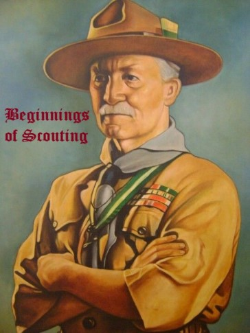

This page gives a brief summary of the website to follow. Ever since 1908, when Lord Baden-Powel published his first issue of his magazine, Scouting For Boys, the scouting programme has grown to have over one million members throughout the world. Scouting programmes have evolved throughout the years, adapting as the overall trends in the interests of children changed since the 1900s. This website aims to look at the history of scouting and how it has changed. More specifically, we will be looking at the history scouting in North America, and my troop in specific. Enjoy.
A Comprehensive History and Troop 336 Website
The Beginnings of Scouting

The scouting movement started with a man named Lord Baden Powell in 1908. Scouting in these early days was very different from the scouting programme we recognize today. In this section we explore the beginnings of scouting; such as what inspired it, what was the programme like, and the reasons for its popularity.
Scouting in North America

In 1909, when William Boyce got lost in England, a boy helped him to him destination but refused payment. When he found out about the programme, he went home and in 1910, started the Boy Scouts of America. This section dives into the specific developments of scouting in each decade and includes a section on Scouting Canada.
Troop 336

Troop 336 has been in existence since June 1954. Over the years we have produced over 60 Eagle Scouts. Some of them have gone on to the United States Military Academy at West Point. We are an "outings" oriented Troop, having an outdoor event planned nearly every month of the year.